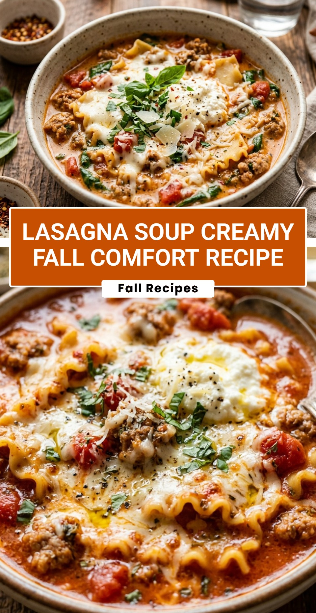

Lasagna Soup Creamy Fall Comfort Recipe
October 20, 2026

When the leaves start to change and the air gets crisp, nothing hits the spot quite like a bowl of warm, hearty soup. This Lasagna Soup Creamy Fall Comfort Recipe takes everything you love about a traditional baked lasagna—the rich meat sauce, the tender pasta, and the gooey cheese—and transforms it into a soul-warming soup. It is the ultimate shortcut for those nights when you crave Italian comfort food but do not want to spend hours layering noodles in a pan.
Recipe Information
Prep Time: 15 minutes
Cook Time: 25 minutes
Total Time: 40 minutes
Servings: 6
Difficulty Level: Easy
Nutrition Information
Calories per serving: 485 kcal
Protein: 28g
Carbohydrates: 34g
Fat: 26g
Fiber: 4g
Sugar: 6g
Sodium: 980mg